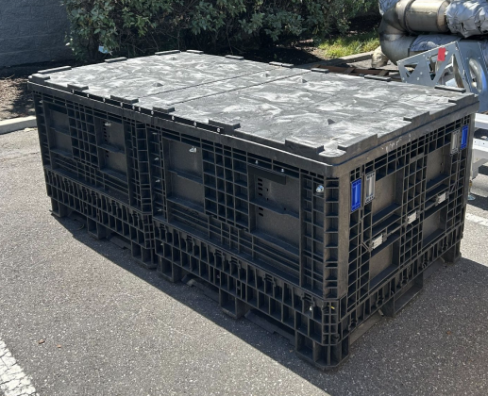
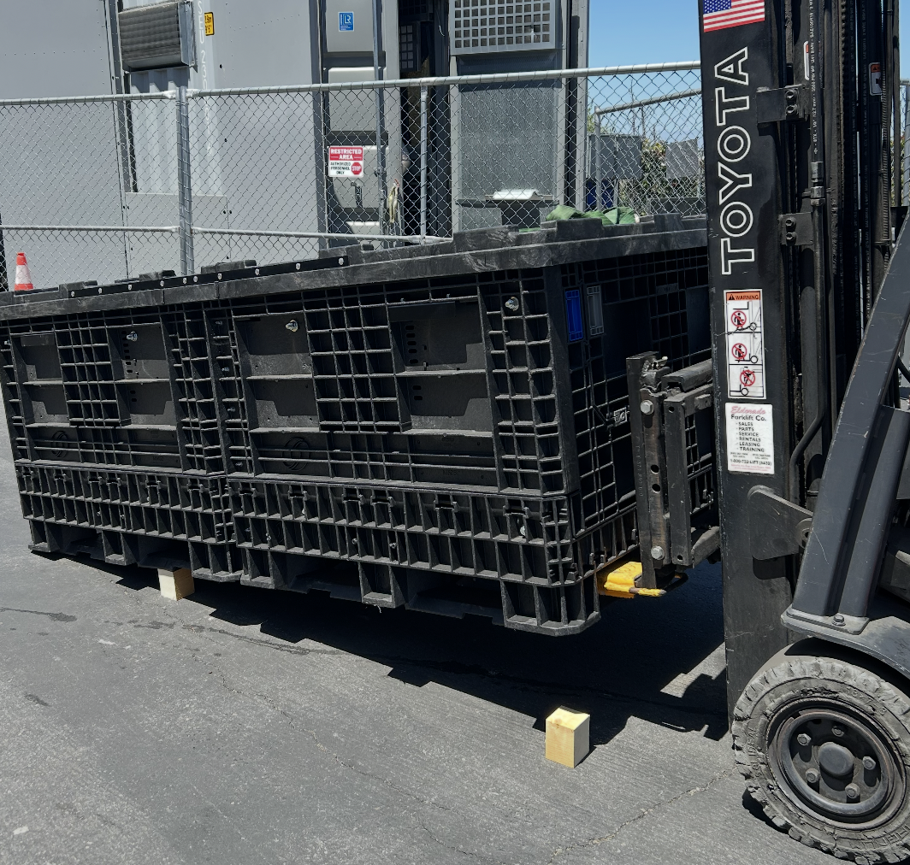
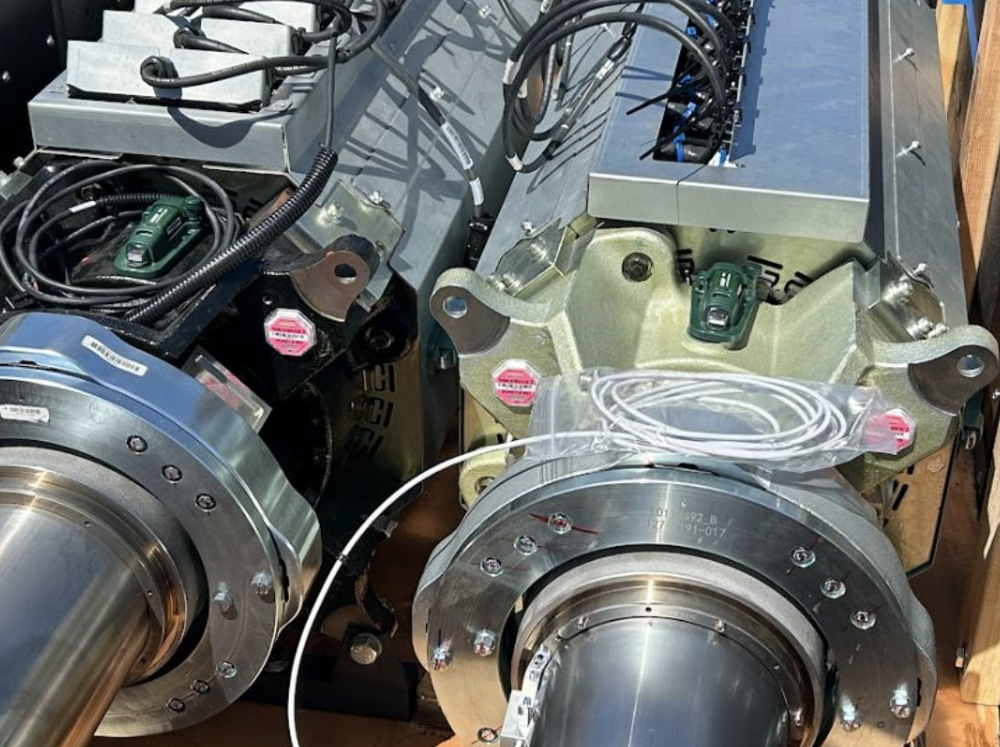
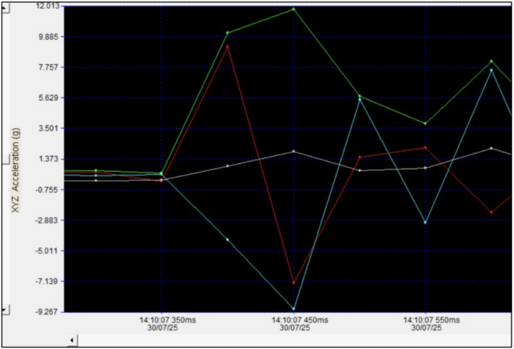
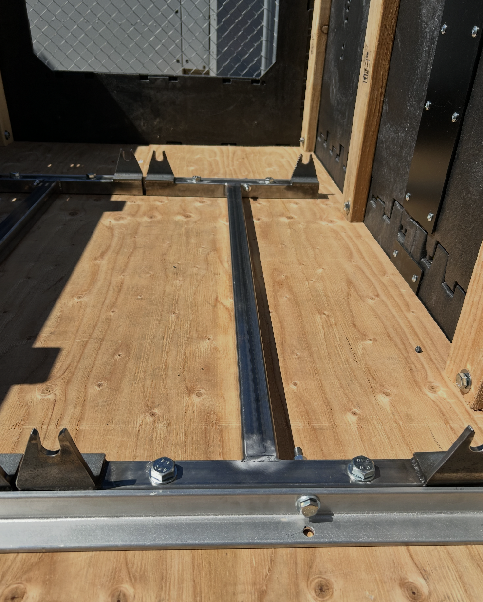
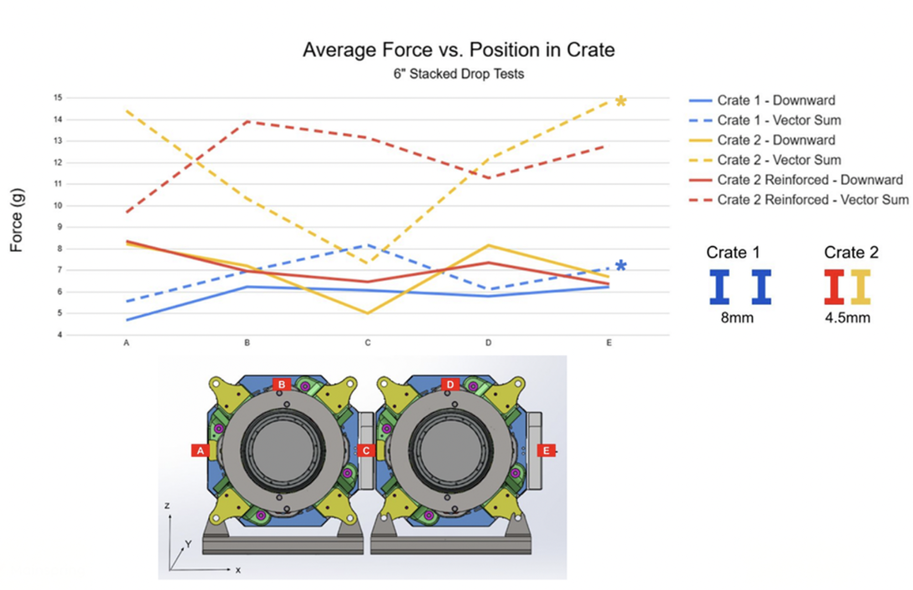

Shipping Crate Qualification Testing
Developed and executed test methods to evaluate crate durability under realistic transport conditions and guide a more robust installation approach.

Objective
The objective of this project was to evaluate whether a new crate for stator assembly shipment could safely withstand realistic transport conditions without introducing increased risk to the system.
Each crate houses stator assemblies from a Linear Electromagnetic Machine (LEM), which are critical and relatively fragile components that must be transported between manufacturing and deployment sites.
Previous shipping solutions used single-unit wooden crates that were prone to deterioration and effectively single-use. The new crate design was developed to improve durability and reusability, while also enabling two stator assemblies to be shipped in a single container. This design is also stackable, improving shipping efficiency and logistics, as the wooden crates could not be safely stacked.
To validate the new design, I developed test methods to simulate transport conditions and quantify loading on the system. I instrumented the stator assemblies with shock and vibration data loggers to capture acceleration data during drop testing. Testing focused on measuring downward forces, combined multi-axis loading, and interaction forces between the two assemblies.
Collected data was compared against previously validated single-unit crate performance, which served as a baseline for acceptable loading conditions.

Results & Findings
Testing showed that the new crate configuration introduced higher loading conditions compared to the baseline single-unit crate:
- Increased downward acceleration indicated more severe transport loading.
- Interaction between the two stator assemblies contributed to load amplification.
- Several measurements exceeded previously validated baseline thresholds.
These results indicated that the new crate design introduced additional risk under realistic transport conditions, primarily due to internal interaction between the assemblies. This led to the need for a revised installation approach to limit relative motion between assemblies and improve load distribution within the crate.



Design Response
Based on these findings, I developed an alternative installation approach to improve process efficiency and structural robustness. The updated approach:
- Reduced relative motion and collision between the stator assemblies.
- Improved load distribution into the crate structure.
- Increased overall system stiffness compared to directly bolting the assemblies into the crate.
This directly addressed the internal interaction observed during testing while also improving assembly efficiency.


My Contributions
- Developed and documented test procedures.
- Executed physical testing under defined conditions.
- Collected and interpreted test data.
- Coordinated testing logistics and scheduling.
- Supported validation decisions based on test results.
- Presented findings and recommendations to the team.